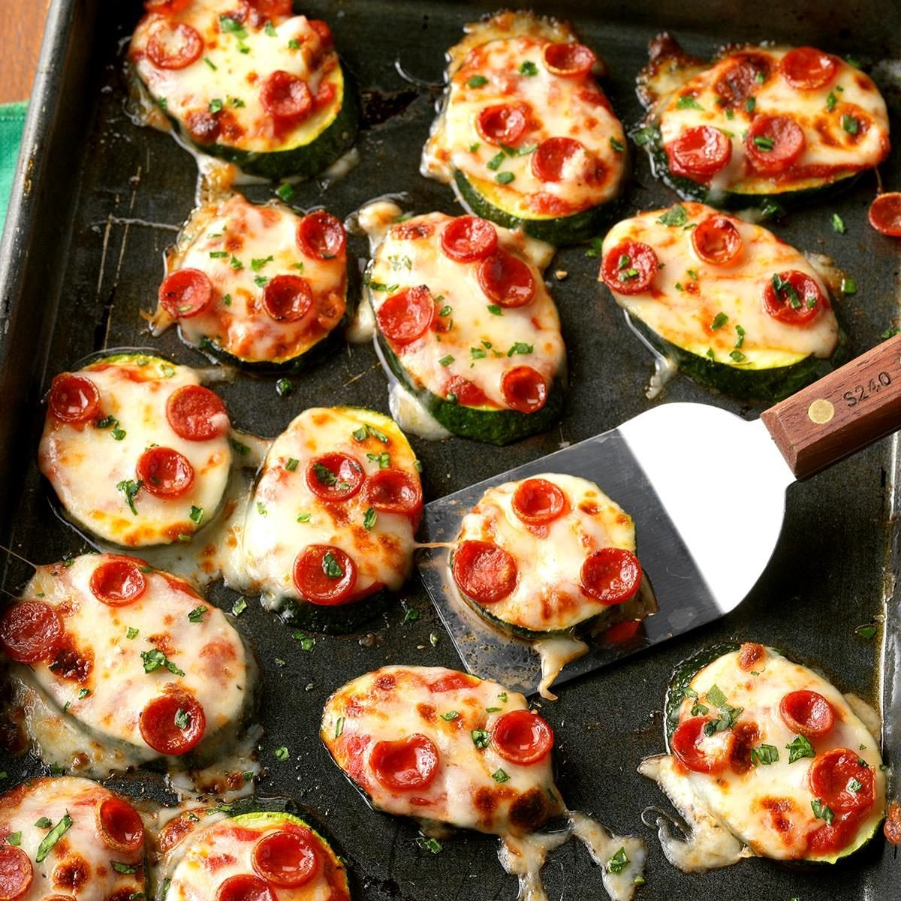

Mini Zucchini Pizzas

Description:
Looking for low carb? This simple snack recipe is a fantastic way to
satisfy your pizza cravings while skipping the usual carb-filled crust.
Ingredients:
-
1 large zucchini (about 11 ounces), cut diagonally into 1/4-inch slices
- 1/8 teaspoon salt
- 1/8 teaspoon pepper
- 1/3 cup pizza sauce
- 3/4 cup shredded part-skim mozzarella cheese
- 1/2 cup miniature pepperoni slices
- Minced fresh basil
Steps:
-
Preheat broiler. Arrange zucchini in a single layer on a greased baking
sheet. Broil 3-4 in. from heat just until crisp-tender, 1-2 minutes per
side.
-
Sprinkle zucchini with salt and pepper; top with sauce, cheese and
pepperoni. Broil until cheese is melted, about 1 minute. Sprinkle with
basil.
Nutrition Facts:
1 appetizer: 29 calories, 2g fat (1g saturated fat), 5mg cholesterol,
108mg sodium, 1g carbohydrate (1g sugars, 0 fiber), 2g protein.